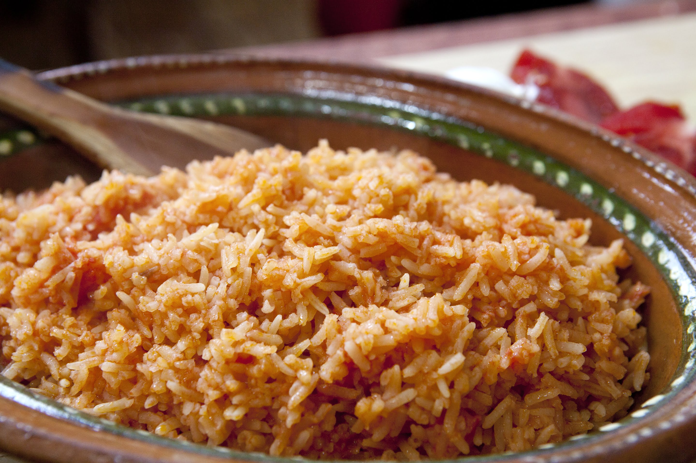

INGREDIENTES
1 taza de arroz, entero
1/2 tazas de aceite
2 tazas de agua, caliente o caldo de pollo
2 jitomates, sin piel, picados
2 zanahorias, peladas y en cuadritos
1/2 tazas de chícharo
1 chile serrano, entero
al gusto de sal
2 ramas de perejil
2 ramas de cilantro fresco
PREPARACIÓN
Remojar el arroz en agua caliente por unos 15 minutos, después lo lavas en agua fría hasta que el agua salga transparente, lo escurres bien y lo dejas secar.
En una cacerola vamos a freír el arroz con aceite hasta que empiece a verse dorado claro y retira el exceso de aceite.
Vamos a licuar el jitomate, ajo y cebolla el puré debe quedar espeso, lo agregas al arroz y lo dejas cocinando unos minutos hasta que lo absorba.
Después agregamos el liquido (caldo ó agua), sal y las verduras y mueve con cuidado para distribuir los ingredientes, vamos a cubrir con las ramas de perejil y cilantro
y ya que empiece a hervir, tape la cacerola y no vuelva a destapar hasta después de 15 minutos para revisar cuánta agua tiene máximo déjalo 20 minutos y quítalo del fuego y déjalos unos 10 minutos y listo lo puedes servir.